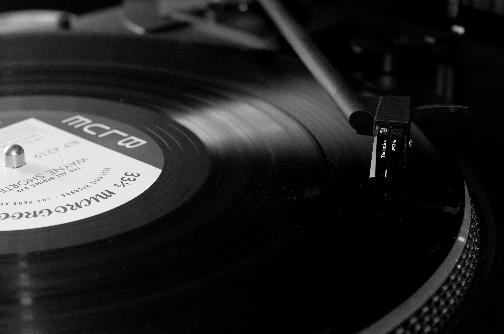

 생활코딩 선생님이나, 나도코딩 선생님, 영상을 볼때는, 즉, 코딩 수업을 들을때는 음악을 듣지는 않지만, 나는 워낙 음악을 듣는것을 좋아하기 때문에, 코딩을 할 때 음악을 들으며 코딩을 한다. 원래 이런 저런 음악 장르를 구분하지않고 들었지만, 우연히 유튜브로 힙합재즈를 접하게 되어서, 푹빠져버렸다. 코딩하면서 듣기에 정말 찰떡이다.
코딩할 때 듣기 좋은 로파이 재즈 힙합 (playlist)/𝕝𝕠𝕗𝕚 𝕛𝕒𝕫𝕫 𝕙𝕚𝕡𝕙𝕠𝕡 𝟙𝕙𝕣